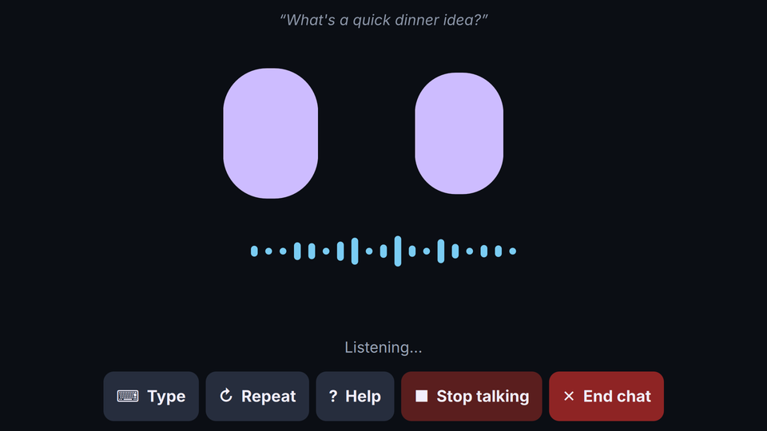
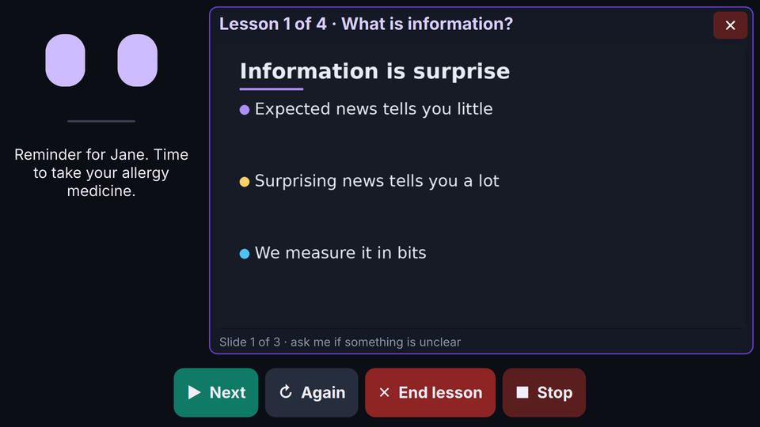
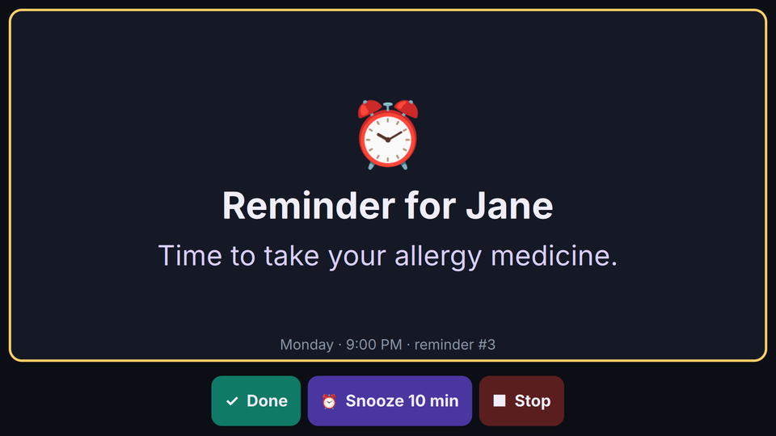
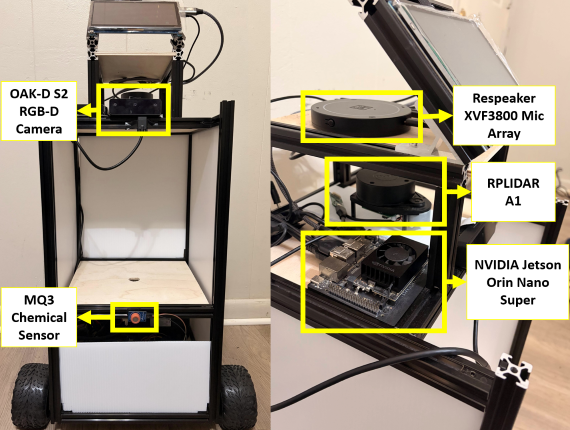

A friendly robot that talks, remembers and finds its way.
PetRobot is an assistant robot for homes and public spaces like libraries. Say “Hey Jarvis” and it turns to face you, answers out loud, and can lead you where you need to go.
See it in action
A short demo of the current prototype.
A face made of two eyes and a line
The eyes show where the robot's attention is and how it feels. The line shows sound: blue bars while it hears you, a purple wave while it speaks. Everything it can do is also one tap away.



What it does
The project is under active development. Each item is marked with where it stands today.
Natural conversation
Wakes on “Hey Jarvis”, turns toward the speaker, and answers by voice. Its eyes look at whoever is talking.
Knows who it's talking to
Recognises returning people by face and voice and greets them by name.
Guides you to places
Maps its surroundings with a lidar and drives itself to named spots on request.
Reminders and timers
“Remind Jane to take her medicine every Monday at 9 PM” — and it does, out loud.
Photos
Takes a picture on request with a live preview and countdown on screen.
Short lessons
Teaches a topic step by step with slides on its screen and quick questions, and remembers your progress.
Learns by watching
Show it a task once; it saves the steps with photos and can walk someone else through it.
Remembers many places
Keeps a separate map for each place it works in, including the objects it has seen there.
Library assistant
A pilot in a university library: help students find books and lead them to the right shelf.
Inside the robot
Built from off-the-shelf parts on an aluminium frame, running ROS 2.

- NVIDIA Jetson Orin Nano SuperOn-board computer for vision, speech and navigation.
- OAK-D S2 RGB-D cameraColour and depth for photos and object mapping.
- ReSpeaker XVF3800 microphone arrayHears the wake word and where a voice comes from.
- RPLIDAR A1360° laser scanner for mapping and obstacle avoidance.
- 7-inch touchscreenThe robot's face, plus buttons for everything it can do.
- MQ3 chemical sensorGas sensing for research on odour-source search.
- Differential-drive baseTwo driven wheels; turns on the spot.
Get in touch
Interested in the project, a pilot, or collaborating? I'd be glad to hear from you.